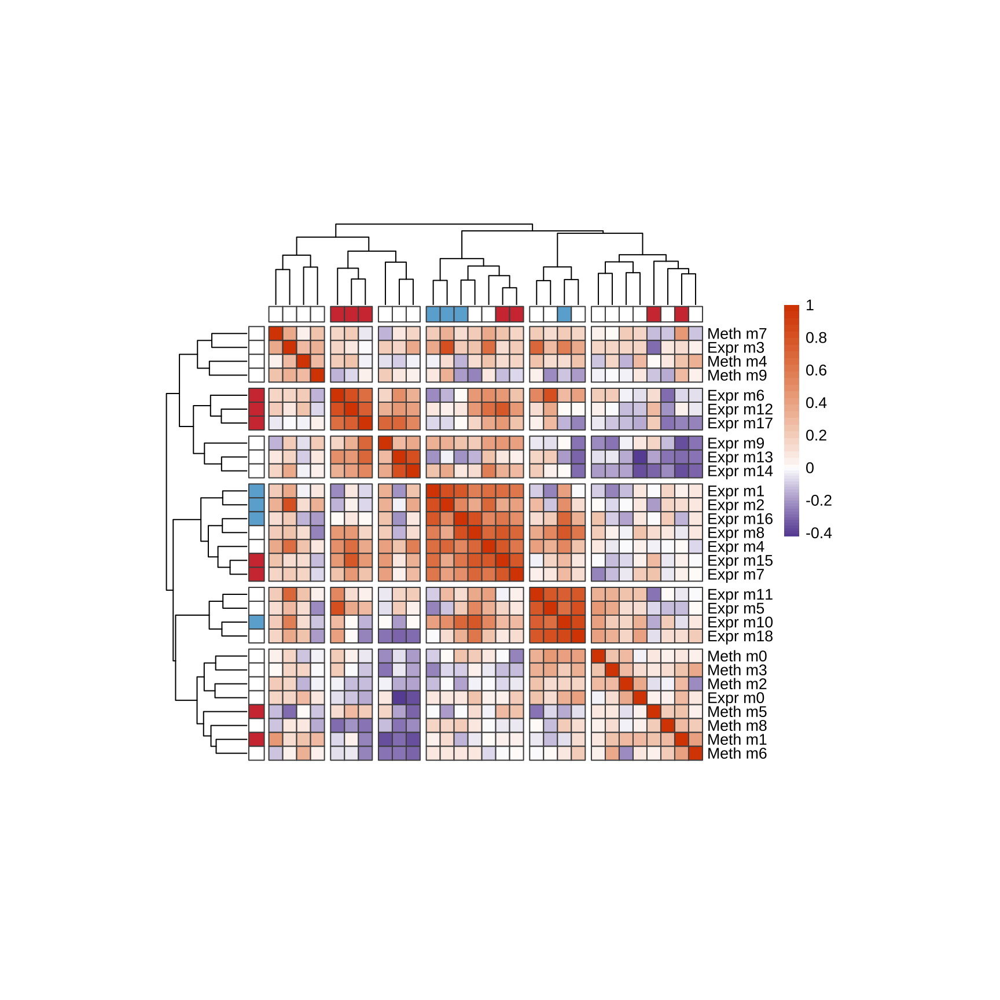
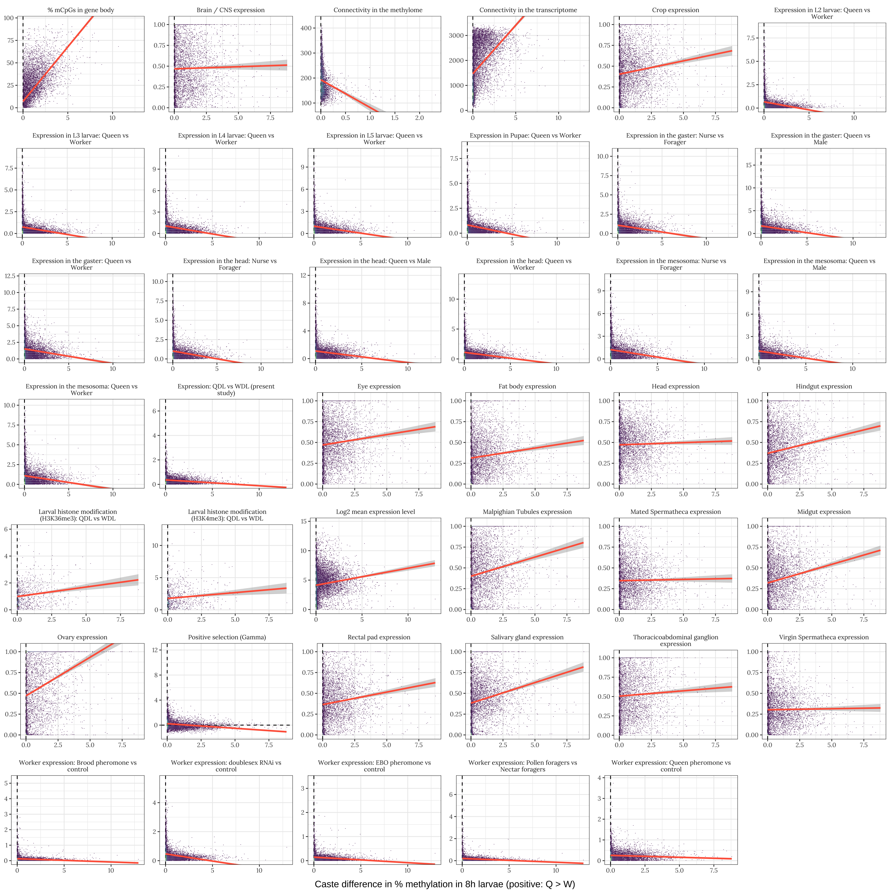

Comparisons of the expression and DNA methylation data
Last updated: 2021-05-12
Checks: 7 0
Knit directory: Methylation_Apis/
This reproducible R Markdown analysis was created with workflowr (version 1.6.2). The Checks tab describes the reproducibility checks that were applied when the results were created. The Past versions tab lists the development history.
Great! Since the R Markdown file has been committed to the Git repository, you know the exact version of the code that produced these results.
Great job! The global environment was empty. Objects defined in the global environment can affect the analysis in your R Markdown file in unknown ways. For reproduciblity it’s best to always run the code in an empty environment.
The command set.seed(20190712) was run prior to running the code in the R Markdown file. Setting a seed ensures that any results that rely on randomness, e.g. subsampling or permutations, are reproducible.
Great job! Recording the operating system, R version, and package versions is critical for reproducibility.
Nice! There were no cached chunks for this analysis, so you can be confident that you successfully produced the results during this run.
Great job! Using relative paths to the files within your workflowr project makes it easier to run your code on other machines.
Great! You are using Git for version control. Tracking code development and connecting the code version to the results is critical for reproducibility.
The results in this page were generated with repository version a67f269. See the Past versions tab to see a history of the changes made to the R Markdown and HTML files.
Note that you need to be careful to ensure that all relevant files for the analysis have been committed to Git prior to generating the results (you can use wflow_publish or wflow_git_commit). workflowr only checks the R Markdown file, but you know if there are other scripts or data files that it depends on. Below is the status of the Git repository when the results were generated:
Ignored files:
Ignored: .DS_Store
Ignored: .Rapp.history
Ignored: .Rproj.user/
Ignored: Expression/
Ignored: data/
Ignored: figures/.DS_Store
Ignored: figures/.Rapp.history
Ignored: figures/gene_browser_plots/.DS_Store
Ignored: figures/meth_sites/.DS_Store
Ignored: figures/site_meth_hist/.DS_Store
Ignored: output/
Untracked files:
Untracked: figures/expr_temporal_GOBP_dmel.rds
Untracked: figures/expr_temporal_GOCC_dmel.rds
Untracked: figures/expr_temporal_GOMF_dmel.rds
Untracked: figures/expr_temporal_KEGG_dmel.rds
Untracked: figures/genomic_methyl_distribution.rds
Unstaged changes:
Modified: code/GO_and_KEGG_gsea.R
Modified: code/create_merged_data.R
Modified: code/download_annotations.R
Modified: code/main_paper_figures.Rmd
Modified: code/main_paper_figures.log
Modified: code/main_paper_figures.pdf
Modified: code/make_database.R
Modified: code/make_pathway_figure.R
Modified: code/supplementary_figs_tables.Rmd
Modified: code/supplementary_figs_tables.pdf
Modified: figures/big_correlation_heatmap.pdf
Modified: figures/composite_GO.pdf
Modified: figures/composite_eigengenes.pdf
Modified: figures/composite_figure.pdf
Modified: figures/expr_GO_BPremainder_dmel.rds
Modified: figures/expr_GO_CC_dmel.rds
Modified: figures/expr_GO_for_composite_figure.rds
Modified: figures/expr_KEGG_dmel.rds
Modified: figures/expression_heatmap.pdf
Modified: figures/gene_browser_fig.pdf
Modified: figures/gene_browser_plots/gene1.rds
Modified: figures/gene_browser_plots/gene10.rds
Modified: figures/gene_browser_plots/gene100.rds
Modified: figures/gene_browser_plots/gene101.rds
Modified: figures/gene_browser_plots/gene102.rds
Modified: figures/gene_browser_plots/gene103.rds
Modified: figures/gene_browser_plots/gene104.rds
Modified: figures/gene_browser_plots/gene105.rds
Modified: figures/gene_browser_plots/gene106.rds
Modified: figures/gene_browser_plots/gene107.rds
Modified: figures/gene_browser_plots/gene108.rds
Modified: figures/gene_browser_plots/gene109.rds
Modified: figures/gene_browser_plots/gene11.rds
Modified: figures/gene_browser_plots/gene110.rds
Modified: figures/gene_browser_plots/gene111.rds
Modified: figures/gene_browser_plots/gene112.rds
Modified: figures/gene_browser_plots/gene113.rds
Modified: figures/gene_browser_plots/gene114.rds
Modified: figures/gene_browser_plots/gene115.rds
Modified: figures/gene_browser_plots/gene116.rds
Modified: figures/gene_browser_plots/gene117.rds
Modified: figures/gene_browser_plots/gene118.rds
Modified: figures/gene_browser_plots/gene119.rds
Modified: figures/gene_browser_plots/gene12.rds
Modified: figures/gene_browser_plots/gene120.rds
Modified: figures/gene_browser_plots/gene121.rds
Modified: figures/gene_browser_plots/gene122.rds
Modified: figures/gene_browser_plots/gene123.rds
Modified: figures/gene_browser_plots/gene124.rds
Modified: figures/gene_browser_plots/gene125.rds
Modified: figures/gene_browser_plots/gene126.rds
Modified: figures/gene_browser_plots/gene127.rds
Modified: figures/gene_browser_plots/gene128.rds
Modified: figures/gene_browser_plots/gene129.rds
Modified: figures/gene_browser_plots/gene13.rds
Modified: figures/gene_browser_plots/gene130.rds
Modified: figures/gene_browser_plots/gene131.rds
Modified: figures/gene_browser_plots/gene132.rds
Modified: figures/gene_browser_plots/gene133.rds
Modified: figures/gene_browser_plots/gene134.rds
Modified: figures/gene_browser_plots/gene135.rds
Modified: figures/gene_browser_plots/gene136.rds
Modified: figures/gene_browser_plots/gene137.rds
Modified: figures/gene_browser_plots/gene138.rds
Modified: figures/gene_browser_plots/gene139.rds
Modified: figures/gene_browser_plots/gene14.rds
Modified: figures/gene_browser_plots/gene140.rds
Modified: figures/gene_browser_plots/gene141.rds
Modified: figures/gene_browser_plots/gene142.rds
Modified: figures/gene_browser_plots/gene143.rds
Modified: figures/gene_browser_plots/gene144.rds
Modified: figures/gene_browser_plots/gene145.rds
Modified: figures/gene_browser_plots/gene146.rds
Modified: figures/gene_browser_plots/gene147.rds
Modified: figures/gene_browser_plots/gene148.rds
Modified: figures/gene_browser_plots/gene149.rds
Modified: figures/gene_browser_plots/gene15.rds
Modified: figures/gene_browser_plots/gene150.rds
Modified: figures/gene_browser_plots/gene151.rds
Modified: figures/gene_browser_plots/gene152.rds
Modified: figures/gene_browser_plots/gene153.rds
Modified: figures/gene_browser_plots/gene154.rds
Modified: figures/gene_browser_plots/gene155.rds
Modified: figures/gene_browser_plots/gene156.rds
Modified: figures/gene_browser_plots/gene157.rds
Modified: figures/gene_browser_plots/gene158.rds
Modified: figures/gene_browser_plots/gene159.rds
Modified: figures/gene_browser_plots/gene16.rds
Modified: figures/gene_browser_plots/gene160.rds
Modified: figures/gene_browser_plots/gene161.rds
Modified: figures/gene_browser_plots/gene162.rds
Modified: figures/gene_browser_plots/gene163.rds
Modified: figures/gene_browser_plots/gene164.rds
Modified: figures/gene_browser_plots/gene165.rds
Modified: figures/gene_browser_plots/gene166.rds
Modified: figures/gene_browser_plots/gene167.rds
Modified: figures/gene_browser_plots/gene168.rds
Modified: figures/gene_browser_plots/gene169.rds
Modified: figures/gene_browser_plots/gene17.rds
Modified: figures/gene_browser_plots/gene170.rds
Modified: figures/gene_browser_plots/gene171.rds
Modified: figures/gene_browser_plots/gene172.rds
Modified: figures/gene_browser_plots/gene173.rds
Modified: figures/gene_browser_plots/gene174.rds
Modified: figures/gene_browser_plots/gene175.rds
Modified: figures/gene_browser_plots/gene176.rds
Modified: figures/gene_browser_plots/gene177.rds
Modified: figures/gene_browser_plots/gene178.rds
Modified: figures/gene_browser_plots/gene179.rds
Modified: figures/gene_browser_plots/gene18.rds
Modified: figures/gene_browser_plots/gene180.rds
Modified: figures/gene_browser_plots/gene181.rds
Modified: figures/gene_browser_plots/gene182.rds
Modified: figures/gene_browser_plots/gene183.rds
Modified: figures/gene_browser_plots/gene184.rds
Modified: figures/gene_browser_plots/gene185.rds
Modified: figures/gene_browser_plots/gene186.rds
Modified: figures/gene_browser_plots/gene187.rds
Modified: figures/gene_browser_plots/gene188.rds
Modified: figures/gene_browser_plots/gene189.rds
Modified: figures/gene_browser_plots/gene19.rds
Modified: figures/gene_browser_plots/gene190.rds
Modified: figures/gene_browser_plots/gene191.rds
Modified: figures/gene_browser_plots/gene192.rds
Modified: figures/gene_browser_plots/gene193.rds
Modified: figures/gene_browser_plots/gene194.rds
Modified: figures/gene_browser_plots/gene195.rds
Modified: figures/gene_browser_plots/gene196.rds
Modified: figures/gene_browser_plots/gene197.rds
Modified: figures/gene_browser_plots/gene198.rds
Modified: figures/gene_browser_plots/gene199.rds
Modified: figures/gene_browser_plots/gene2.rds
Modified: figures/gene_browser_plots/gene20.rds
Modified: figures/gene_browser_plots/gene200.rds
Modified: figures/gene_browser_plots/gene201.rds
Modified: figures/gene_browser_plots/gene202.rds
Modified: figures/gene_browser_plots/gene203.rds
Modified: figures/gene_browser_plots/gene204.rds
Modified: figures/gene_browser_plots/gene205.rds
Modified: figures/gene_browser_plots/gene206.rds
Modified: figures/gene_browser_plots/gene207.rds
Modified: figures/gene_browser_plots/gene208.rds
Modified: figures/gene_browser_plots/gene209.rds
Modified: figures/gene_browser_plots/gene21.rds
Modified: figures/gene_browser_plots/gene210.rds
Modified: figures/gene_browser_plots/gene211.rds
Modified: figures/gene_browser_plots/gene212.rds
Modified: figures/gene_browser_plots/gene213.rds
Modified: figures/gene_browser_plots/gene214.rds
Modified: figures/gene_browser_plots/gene215.rds
Modified: figures/gene_browser_plots/gene216.rds
Modified: figures/gene_browser_plots/gene217.rds
Modified: figures/gene_browser_plots/gene218.rds
Modified: figures/gene_browser_plots/gene219.rds
Modified: figures/gene_browser_plots/gene22.rds
Modified: figures/gene_browser_plots/gene220.rds
Modified: figures/gene_browser_plots/gene221.rds
Modified: figures/gene_browser_plots/gene222.rds
Modified: figures/gene_browser_plots/gene223.rds
Modified: figures/gene_browser_plots/gene224.rds
Modified: figures/gene_browser_plots/gene225.rds
Modified: figures/gene_browser_plots/gene226.rds
Modified: figures/gene_browser_plots/gene227.rds
Modified: figures/gene_browser_plots/gene228.rds
Modified: figures/gene_browser_plots/gene229.rds
Modified: figures/gene_browser_plots/gene23.rds
Modified: figures/gene_browser_plots/gene230.rds
Modified: figures/gene_browser_plots/gene231.rds
Modified: figures/gene_browser_plots/gene232.rds
Modified: figures/gene_browser_plots/gene233.rds
Modified: figures/gene_browser_plots/gene234.rds
Modified: figures/gene_browser_plots/gene235.rds
Modified: figures/gene_browser_plots/gene236.rds
Modified: figures/gene_browser_plots/gene237.rds
Modified: figures/gene_browser_plots/gene238.rds
Modified: figures/gene_browser_plots/gene239.rds
Modified: figures/gene_browser_plots/gene24.rds
Modified: figures/gene_browser_plots/gene240.rds
Modified: figures/gene_browser_plots/gene241.rds
Modified: figures/gene_browser_plots/gene242.rds
Modified: figures/gene_browser_plots/gene243.rds
Modified: figures/gene_browser_plots/gene244.rds
Modified: figures/gene_browser_plots/gene245.rds
Modified: figures/gene_browser_plots/gene246.rds
Modified: figures/gene_browser_plots/gene247.rds
Modified: figures/gene_browser_plots/gene248.rds
Modified: figures/gene_browser_plots/gene249.rds
Modified: figures/gene_browser_plots/gene25.rds
Modified: figures/gene_browser_plots/gene250.rds
Modified: figures/gene_browser_plots/gene251.rds
Modified: figures/gene_browser_plots/gene252.rds
Modified: figures/gene_browser_plots/gene253.rds
Modified: figures/gene_browser_plots/gene254.rds
Modified: figures/gene_browser_plots/gene255.rds
Modified: figures/gene_browser_plots/gene256.rds
Modified: figures/gene_browser_plots/gene257.rds
Modified: figures/gene_browser_plots/gene258.rds
Modified: figures/gene_browser_plots/gene259.rds
Modified: figures/gene_browser_plots/gene26.rds
Modified: figures/gene_browser_plots/gene260.rds
Modified: figures/gene_browser_plots/gene261.rds
Modified: figures/gene_browser_plots/gene262.rds
Modified: figures/gene_browser_plots/gene263.rds
Modified: figures/gene_browser_plots/gene264.rds
Modified: figures/gene_browser_plots/gene265.rds
Modified: figures/gene_browser_plots/gene266.rds
Modified: figures/gene_browser_plots/gene267.rds
Modified: figures/gene_browser_plots/gene268.rds
Modified: figures/gene_browser_plots/gene269.rds
Modified: figures/gene_browser_plots/gene27.rds
Modified: figures/gene_browser_plots/gene270.rds
Modified: figures/gene_browser_plots/gene271.rds
Modified: figures/gene_browser_plots/gene272.rds
Modified: figures/gene_browser_plots/gene273.rds
Modified: figures/gene_browser_plots/gene274.rds
Modified: figures/gene_browser_plots/gene275.rds
Modified: figures/gene_browser_plots/gene276.rds
Modified: figures/gene_browser_plots/gene277.rds
Modified: figures/gene_browser_plots/gene278.rds
Modified: figures/gene_browser_plots/gene279.rds
Modified: figures/gene_browser_plots/gene28.rds
Modified: figures/gene_browser_plots/gene280.rds
Modified: figures/gene_browser_plots/gene281.rds
Modified: figures/gene_browser_plots/gene282.rds
Modified: figures/gene_browser_plots/gene283.rds
Modified: figures/gene_browser_plots/gene284.rds
Modified: figures/gene_browser_plots/gene285.rds
Modified: figures/gene_browser_plots/gene286.rds
Modified: figures/gene_browser_plots/gene287.rds
Modified: figures/gene_browser_plots/gene288.rds
Modified: figures/gene_browser_plots/gene289.rds
Modified: figures/gene_browser_plots/gene29.rds
Modified: figures/gene_browser_plots/gene290.rds
Modified: figures/gene_browser_plots/gene291.rds
Modified: figures/gene_browser_plots/gene292.rds
Modified: figures/gene_browser_plots/gene293.rds
Modified: figures/gene_browser_plots/gene294.rds
Modified: figures/gene_browser_plots/gene295.rds
Modified: figures/gene_browser_plots/gene296.rds
Modified: figures/gene_browser_plots/gene297.rds
Modified: figures/gene_browser_plots/gene298.rds
Modified: figures/gene_browser_plots/gene299.rds
Modified: figures/gene_browser_plots/gene3.rds
Modified: figures/gene_browser_plots/gene30.rds
Modified: figures/gene_browser_plots/gene300.rds
Modified: figures/gene_browser_plots/gene301.rds
Modified: figures/gene_browser_plots/gene302.rds
Modified: figures/gene_browser_plots/gene303.rds
Modified: figures/gene_browser_plots/gene304.rds
Modified: figures/gene_browser_plots/gene305.rds
Modified: figures/gene_browser_plots/gene306.rds
Modified: figures/gene_browser_plots/gene307.rds
Modified: figures/gene_browser_plots/gene308.rds
Modified: figures/gene_browser_plots/gene309.rds
Modified: figures/gene_browser_plots/gene31.rds
Modified: figures/gene_browser_plots/gene310.rds
Modified: figures/gene_browser_plots/gene311.rds
Modified: figures/gene_browser_plots/gene312.rds
Modified: figures/gene_browser_plots/gene313.rds
Modified: figures/gene_browser_plots/gene314.rds
Modified: figures/gene_browser_plots/gene315.rds
Modified: figures/gene_browser_plots/gene316.rds
Modified: figures/gene_browser_plots/gene317.rds
Modified: figures/gene_browser_plots/gene318.rds
Modified: figures/gene_browser_plots/gene319.rds
Modified: figures/gene_browser_plots/gene32.rds
Modified: figures/gene_browser_plots/gene320.rds
Modified: figures/gene_browser_plots/gene321.rds
Modified: figures/gene_browser_plots/gene322.rds
Modified: figures/gene_browser_plots/gene323.rds
Modified: figures/gene_browser_plots/gene324.rds
Modified: figures/gene_browser_plots/gene325.rds
Modified: figures/gene_browser_plots/gene326.rds
Modified: figures/gene_browser_plots/gene327.rds
Modified: figures/gene_browser_plots/gene328.rds
Modified: figures/gene_browser_plots/gene329.rds
Modified: figures/gene_browser_plots/gene33.rds
Modified: figures/gene_browser_plots/gene330.rds
Modified: figures/gene_browser_plots/gene331.rds
Modified: figures/gene_browser_plots/gene332.rds
Modified: figures/gene_browser_plots/gene333.rds
Modified: figures/gene_browser_plots/gene334.rds
Modified: figures/gene_browser_plots/gene335.rds
Modified: figures/gene_browser_plots/gene336.rds
Modified: figures/gene_browser_plots/gene337.rds
Modified: figures/gene_browser_plots/gene338.rds
Modified: figures/gene_browser_plots/gene339.rds
Modified: figures/gene_browser_plots/gene34.rds
Modified: figures/gene_browser_plots/gene340.rds
Modified: figures/gene_browser_plots/gene341.rds
Modified: figures/gene_browser_plots/gene342.rds
Modified: figures/gene_browser_plots/gene343.rds
Modified: figures/gene_browser_plots/gene344.rds
Modified: figures/gene_browser_plots/gene345.rds
Modified: figures/gene_browser_plots/gene346.rds
Modified: figures/gene_browser_plots/gene347.rds
Modified: figures/gene_browser_plots/gene348.rds
Modified: figures/gene_browser_plots/gene349.rds
Modified: figures/gene_browser_plots/gene35.rds
Modified: figures/gene_browser_plots/gene350.rds
Modified: figures/gene_browser_plots/gene351.rds
Modified: figures/gene_browser_plots/gene352.rds
Modified: figures/gene_browser_plots/gene353.rds
Modified: figures/gene_browser_plots/gene354.rds
Modified: figures/gene_browser_plots/gene355.rds
Modified: figures/gene_browser_plots/gene356.rds
Modified: figures/gene_browser_plots/gene357.rds
Modified: figures/gene_browser_plots/gene358.rds
Modified: figures/gene_browser_plots/gene359.rds
Modified: figures/gene_browser_plots/gene36.rds
Modified: figures/gene_browser_plots/gene360.rds
Modified: figures/gene_browser_plots/gene361.rds
Modified: figures/gene_browser_plots/gene362.rds
Modified: figures/gene_browser_plots/gene363.rds
Modified: figures/gene_browser_plots/gene364.rds
Modified: figures/gene_browser_plots/gene365.rds
Modified: figures/gene_browser_plots/gene366.rds
Modified: figures/gene_browser_plots/gene367.rds
Modified: figures/gene_browser_plots/gene368.rds
Modified: figures/gene_browser_plots/gene369.rds
Modified: figures/gene_browser_plots/gene37.rds
Modified: figures/gene_browser_plots/gene370.rds
Modified: figures/gene_browser_plots/gene371.rds
Modified: figures/gene_browser_plots/gene372.rds
Modified: figures/gene_browser_plots/gene373.rds
Modified: figures/gene_browser_plots/gene374.rds
Modified: figures/gene_browser_plots/gene375.rds
Modified: figures/gene_browser_plots/gene376.rds
Modified: figures/gene_browser_plots/gene377.rds
Modified: figures/gene_browser_plots/gene378.rds
Modified: figures/gene_browser_plots/gene379.rds
Modified: figures/gene_browser_plots/gene38.rds
Modified: figures/gene_browser_plots/gene380.rds
Modified: figures/gene_browser_plots/gene381.rds
Modified: figures/gene_browser_plots/gene382.rds
Deleted: figures/gene_browser_plots/gene383.rds
Deleted: figures/gene_browser_plots/gene384.rds
Deleted: figures/gene_browser_plots/gene385.rds
Deleted: figures/gene_browser_plots/gene386.rds
Modified: figures/gene_browser_plots/gene39.rds
Modified: figures/gene_browser_plots/gene4.rds
Modified: figures/gene_browser_plots/gene40.rds
Modified: figures/gene_browser_plots/gene41.rds
Modified: figures/gene_browser_plots/gene42.rds
Modified: figures/gene_browser_plots/gene43.rds
Modified: figures/gene_browser_plots/gene44.rds
Modified: figures/gene_browser_plots/gene45.rds
Modified: figures/gene_browser_plots/gene46.rds
Modified: figures/gene_browser_plots/gene47.rds
Modified: figures/gene_browser_plots/gene48.rds
Modified: figures/gene_browser_plots/gene49.rds
Modified: figures/gene_browser_plots/gene5.rds
Modified: figures/gene_browser_plots/gene50.rds
Modified: figures/gene_browser_plots/gene51.rds
Modified: figures/gene_browser_plots/gene52.rds
Modified: figures/gene_browser_plots/gene53.rds
Modified: figures/gene_browser_plots/gene54.rds
Modified: figures/gene_browser_plots/gene55.rds
Modified: figures/gene_browser_plots/gene56.rds
Modified: figures/gene_browser_plots/gene57.rds
Modified: figures/gene_browser_plots/gene58.rds
Modified: figures/gene_browser_plots/gene59.rds
Modified: figures/gene_browser_plots/gene6.rds
Modified: figures/gene_browser_plots/gene60.rds
Modified: figures/gene_browser_plots/gene61.rds
Modified: figures/gene_browser_plots/gene62.rds
Modified: figures/gene_browser_plots/gene63.rds
Modified: figures/gene_browser_plots/gene64.rds
Modified: figures/gene_browser_plots/gene65.rds
Modified: figures/gene_browser_plots/gene66.rds
Modified: figures/gene_browser_plots/gene67.rds
Modified: figures/gene_browser_plots/gene68.rds
Modified: figures/gene_browser_plots/gene69.rds
Modified: figures/gene_browser_plots/gene7.rds
Modified: figures/gene_browser_plots/gene70.rds
Modified: figures/gene_browser_plots/gene71.rds
Modified: figures/gene_browser_plots/gene72.rds
Modified: figures/gene_browser_plots/gene73.rds
Modified: figures/gene_browser_plots/gene74.rds
Modified: figures/gene_browser_plots/gene75.rds
Modified: figures/gene_browser_plots/gene76.rds
Modified: figures/gene_browser_plots/gene77.rds
Modified: figures/gene_browser_plots/gene78.rds
Modified: figures/gene_browser_plots/gene79.rds
Modified: figures/gene_browser_plots/gene8.rds
Modified: figures/gene_browser_plots/gene80.rds
Modified: figures/gene_browser_plots/gene81.rds
Modified: figures/gene_browser_plots/gene82.rds
Modified: figures/gene_browser_plots/gene83.rds
Modified: figures/gene_browser_plots/gene84.rds
Modified: figures/gene_browser_plots/gene85.rds
Modified: figures/gene_browser_plots/gene86.rds
Modified: figures/gene_browser_plots/gene87.rds
Modified: figures/gene_browser_plots/gene88.rds
Modified: figures/gene_browser_plots/gene89.rds
Modified: figures/gene_browser_plots/gene9.rds
Modified: figures/gene_browser_plots/gene90.rds
Modified: figures/gene_browser_plots/gene91.rds
Modified: figures/gene_browser_plots/gene92.rds
Modified: figures/gene_browser_plots/gene93.rds
Modified: figures/gene_browser_plots/gene94.rds
Modified: figures/gene_browser_plots/gene95.rds
Modified: figures/gene_browser_plots/gene96.rds
Modified: figures/gene_browser_plots/gene97.rds
Modified: figures/gene_browser_plots/gene98.rds
Modified: figures/gene_browser_plots/gene99.rds
Modified: figures/genomic_context_plot_caste.rds
Modified: figures/genomic_context_plot_timeQ.rds
Modified: figures/genomic_context_plot_timeW.rds
Modified: figures/heatmap_all.rds
Modified: figures/histo_fig1.rds
Modified: figures/meth_GO_for_composite_figure.rds
Modified: figures/meth_GO_others.rds
Modified: figures/meth_GO_temporal_Amel.rds
Modified: figures/meth_GO_temporal_Dmel.rds
Modified: figures/meth_all_enrichments_Amel.rds
Modified: figures/meth_nmds_plot.rds
Modified: figures/two_sites_for_big_meth_fig.rds
Note that any generated files, e.g. HTML, png, CSS, etc., are not included in this status report because it is ok for generated content to have uncommitted changes.
These are the previous versions of the repository in which changes were made to the R Markdown (analysis/compare_expression_and_methylation.Rmd) and HTML (docs/compare_expression_and_methylation.html) files. If you’ve configured a remote Git repository (see ?wflow_git_remote), click on the hyperlinks in the table below to view the files as they were in that past version.
| File | Version | Author | Date | Message |
|---|---|---|---|---|
| Rmd | a67f269 | lukeholman | 2021-05-12 | workflowr::wflow_publish("analysis/*") |
| html | c514844 | lukeholman | 2021-03-29 | Build site. |
| Rmd | 501fb73 | lukeholman | 2021-03-29 | fix error |
| html | 8394e8a | lukeholman | 2021-03-29 | Build site. |
| Rmd | 7f984dc | lukeholman | 2021-03-29 | Big commit |
| html | e78caba | lukeholman | 2021-03-29 | Build site. |
| Rmd | 476b02f | lukeholman | 2021-03-29 | big commit |
| html | d1cfd52 | lukeholman | 2021-03-10 | Build site. |
| Rmd | 28aa7ec | lukeholman | 2021-03-10 | wflow_publish(“analysis/compare_expression_and_methylation.Rmd”) |
| Rmd | dfd59c2 | lukeholman | 2021-02-18 | Commit new figs |
| html | dfd59c2 | lukeholman | 2021-02-18 | Commit new figs |
| html | 7631739 | lukeholman | 2020-10-06 | Build site. |
| Rmd | 572c2de | lukeholman | 2020-10-06 | wflow_publish(“analysis/compare_expression_and_methylation.Rmd”) |
| Rmd | eebba8d | lukeholman | 2020-10-04 | push to web |
| html | eebba8d | lukeholman | 2020-10-04 | push to web |
| html | a6816f2 | lukeholman | 2020-09-30 | commit figs |
| Rmd | c165026 | lukeholman | 2020-09-30 | push figures etc |
| html | ea9b6a6 | lukeholman | 2020-09-25 | Build site. |
| Rmd | 59623a0 | lukeholman | 2020-09-25 | commit third page |
| html | fae12ed | lukeholman | 2020-09-25 | Build site. |
| Rmd | 0f9d2d3 | lukeholman | 2020-09-25 | commit third page |
| html | 2984863 | lukeholman | 2020-09-25 | Build site. |
| Rmd | f1ef5bd | lukeholman | 2020-09-25 | commit third page |
| Rmd | aaed173 | lukeholman | 2020-09-23 | tweaks |
| Rmd | dd25337 | lukeholman | 2020-09-22 | Many commits |
| html | a8d7c55 | lukeholman | 2020-07-31 | Build site. |
| Rmd | 642bfb7 | lukeholman | 2020-07-27 | Commit before meeting |
| html | 642bfb7 | lukeholman | 2020-07-27 | Commit before meeting |
| html | 184f525 | lukeholman | 2020-07-26 | Build site. |
| Rmd | 441676a | lukeholman | 2020-07-26 | wflow_publish(“analysis/compare_expression_and_methylation.Rmd”) |
library(tidyverse)
library(kableExtra)
library(RColorBrewer)
library(pheatmap)
library(dbplyr)
library(DBI)
library(RSQLite)
library(gridExtra)
library(grid)
library(DT)
library(showtext)
library(WGCNA)
# set up nice font for figure
nice_font <- "Lora"
font_add_google(name = nice_font, family = nice_font, regular.wt = 400, bold.wt = 700)
showtext_auto()
# Load annotations and database
db <- dbConnect(SQLite(), "data/apis_db.sqlite3") # DBI::dbListTables(db)
# # Load BWASP results
# bwasp_sig_genes <- readRDS("output/bwasp_sig_genes.rds")
# Load methylation GLM results
GLM_sig_genes <- readRDS("output/gene_meth_results_table.rds")
# Make html tables:
my_data_table <- function(df){
datatable(
df, rownames=FALSE,
autoHideNavigation = TRUE,
extensions = c("Scroller", "Buttons"),
options = list(
dom = 'Bfrtip',
deferRender=TRUE,
scrollX=TRUE, scrollY=400,
scrollCollapse=TRUE,
buttons =
list('pageLength', 'colvis', 'csv', list(
extend = 'pdf',
pageSize = 'A4',
orientation = 'landscape',
filename = 'Apis_meth_expr')),
pageLength = 50
)
)
}
#
#
# # Define a function to test whether the overlap of two sets of differentially expressed genes,
# # drawn from a common pool (e.g. all the orthologs that were tested), is higher or lower than expected
# # Inspiration for this code: https://stats.stackexchange.com/questions/10328/using-rs-phyper-to-get-the-probability-of-list-overlap
# overlap_hypergeometric_test <- function(
# n_overlaps, n_gene_set1, n_in_set2, overall_n_genes){
#
# # Expected number of overlaps under the null the two gene lists are independent
# exp_n_overlaps <- overall_n_genes * (n_gene_set1 / overall_n_genes) * (n_in_set2 / overall_n_genes)
#
# if(n_overlaps > exp_n_overlaps){ # p getting that number or larger...
# p <- 1 - phyper(n_overlaps - 1, n_gene_set1,
# overall_n_genes - n_gene_set1, n_in_set2)
#
# }
#
# if(n_overlaps < exp_n_overlaps){ # p getting that number or smaller...
# p <- phyper(n_overlaps - 1, n_gene_set1,
# overall_n_genes - n_gene_set1, n_in_set2)
# }
#
# tibble(
# `Observed n overlaps` = n_overlaps,
# `Expected n overlaps` = NA,
# `Enrichment ratio` = round(n_overlaps / exp_n_overlaps, 2),
# `One-tailed p` = round(p, 4)) %>% # p-value that the overlap is *higher* than expected under the null
# mutate(`Expected n overlaps` = round(exp_n_overlaps, 1))
# }
# define plot colours
queen_colour <- "#d13b40"
worker_colour <- RColorBrewer::brewer.pal(7, "Blues")[4]Comparing significant gene lists from expression and methylation analyses
Of the 1343 genes that were significantly differentially methylated and were also tested in the transcriptomic analyses, 406 (i.e. 30.2%) were also significantly differentially expressed. We here list the 406 genes that showed a statistically significant caste difference for both expression and methylation; this list includes many interesting genes, including complementary sex determiner, maternal protein tudor, and superoxide dismutase 2.
# Get the 'gene universe', the set of genes tested in the expr and meth analyses
genes_tested_meth <- tbl(db, "site_annotations") %>%
dplyr::select(promoter_of, intron_in, fiveUTR_in, threeUTR_in) %>%
distinct() %>% collect(n = Inf) %>%
unlist() %>% unname() %>% unique()
genes_tested_expr <- read_csv("output/caste_results.csv")$`Gene symbol` %>% unique()
universe <- intersect(genes_tested_expr, genes_tested_meth)
sig_diff_expr <- read_csv("output/caste_results.csv") %>%
filter(adj.P.Val < 0.05 & `Gene symbol` %in% universe) %>%
pull(`Gene symbol`) %>% unique()
sig_diff_meth <- GLM_sig_genes %>%
dplyr::select(`exon in`, `promoter of`, `intron in`, `5UTR in`, `3UTR in`) %>%
unlist() %>% unname() %>% na.omit() %>% unique()
inters <- intersect(sig_diff_expr, sig_diff_meth)
tbl(db, "gene_names") %>%
filter(gene_symbol %in% inters) %>%
dplyr::select(gene_name, gene_symbol) %>%
collect() %>%
dplyr::rename(`Genes showing both differential expression and methylation` = gene_name,
`Gene symbol` = gene_symbol) %>%
my_data_table()# expr_meth_overlap_hypergeometric <- overlap_hypergeometric_test(
# n_overlaps,
# length(sig_diff_expr),
# length(sig_diff_meth),
# length(universe))Caste differences in gene expression correlate with differences in methylation
Plot the relationship
This binned scatterplot illustrates that genes showing queen-biased methylation tended to show worker-biased expression, and vice versa. The relationship appears weak and noisy, though we note that both the x and y axes are measured with considerable error, which would obscure the underlying correlation. The relationship appears to grow stronger at later time points, and the correlation is significantly negative for the 4h, 6h, and 8h (but not 2h) time points.
bwasp_gene_meth <- read_tsv("data/meth_network_input/Network_persite.txt")
bwasp_gene_meth <- bwasp_gene_meth[
rowMeans(read_tsv("data/meth_network_input/Network_persite.txt")[,-1]) > 5, ]
bwasp_gene_meth <- read_tsv("data/meth_network_input/Network_persite.txt") %>%
gather("sample", "methylation", -Genes) %>%
mutate(caste = case_when(
str_detect(sample, "queen") ~ "queen",
str_detect(sample, "worker") ~ "worker",
TRUE ~ "t0"
)) %>% filter(caste!="t0") %>%
mutate(time = str_extract(sample, "[2468]"),
ct = paste(caste, time, sep = "")) %>%
group_by(Genes, ct) %>%
summarise(mean_meth = mean(methylation)) %>%
spread(ct, mean_meth) %>%
mutate(diff_meth2 = queen2 - worker2,
diff_meth4 = queen4 - worker4,
diff_meth6 = queen6 - worker6,
diff_meth8 = queen8 - worker8) %>%
dplyr::select(Genes, starts_with("diff")) %>%
gather("Time", "diff_meth", -Genes) %>%
mutate(Time = as.numeric(str_extract(Time, "[2468]")))
meth_geneExpr_relationship_data_caste <- read_csv("output/caste_results.csv") %>%
dplyr::select(Time, `Gene symbol`, logFC) %>%
left_join(bwasp_gene_meth, by = c("Gene symbol" = "Genes", "Time")) %>%
filter(!is.na(diff_meth) & !is.na(logFC))
write_csv(meth_geneExpr_relationship_data_caste, "output/meth_geneExpr_relationship_data_caste.csv")
hex_plot <- function(dat){
ggplot(dat, aes(diff_meth, logFC)) +
geom_hline(yintercept = 0, linetype = 2) +
geom_vline(xintercept = 0, linetype = 2) +
geom_hex(bins = 130) +
stat_smooth(method = "lm", size = .7, colour = "red") +
xlab("Caste difference in mean % methylation\n(higher values mean more methylation in queens)") +
ylab("Caste difference in gene expression\n(Log FC; higher values mean more expression in queens)") +
facet_wrap(~ paste(Time, "h post-grafting", sep = "")) +
scale_fill_viridis_c(option = "A", direction = 1) +
coord_cartesian(ylim = c(-2.5, 2.9), xlim = c(-15, 16)) +
theme_bw() +
theme(legend.position = "top",
text = element_text(family = nice_font),
strip.background = element_rect(fill = "white", colour = "white"))
}
meth_geneExpr_relationship_data_caste %>% hex_plot()
Spearman correlations
There is a significant, negative relationship between the caste bias in methylation and the caste bias in gene expression, at times 4h, 6h, and 8h (but not time 2h) post-grafting. The gene-level estimates of % cytosine methylation come from BWASP, and the estimates of the logFC in expression comes from RSEM.
run_corr <- function(time, dat){
results <- cor.test(
filter(dat, Time == time)$diff_meth,
filter(dat, Time == time)$logFC,
method = "spearman")
tibble(time = time, rho = results$estimate, p = results$p.value)
}
map_df(c(2,4,6,8), ~ run_corr(time = .x, dat = meth_geneExpr_relationship_data_caste)) %>%
mutate(p = formatC(p.adjust(p), format = "e", digits = 2)) %>%
dplyr::rename(`Adjusted p` = p, Time = time, `Spearman's rho` = rho) %>%
kable() %>% kable_styling(full_width = FALSE)| Time | Spearman’s rho | Adjusted p |
|---|---|---|
| 2 | -0.0230384 | 2.32e-02 |
| 4 | -0.0835949 | 3.09e-16 |
| 6 | -0.1537259 | 5.77e-52 |
| 8 | -0.2311193 | 2.30e-117 |
Correlations between expression and methylation modules
Plot correlation matrix
Figure 5C: Correlations between the module eigengenes shown in panels A-B, where orange indicates positive correlation and purple indicates negative. Many of the expression modules are negatively correlated with methylation modules, indicating that methylation causes reduced expression (in the same and/or different sets of genes). The red/white/blue colour indicates modules that showed a statistically significant caste bias (red: higher in QDL, blue: higher in WDL, white: unbiased).
mod_data <- left_join(
readRDS("output/meth_eigengenes.rds") %>%
dplyr::rename(Replicate = Rep) %>%
dplyr::select(Sample, Module, Eigengene) %>%
spread(Module, Eigengene) %>%
rename_all(~ str_replace_all(.x, "Module ", "Meth m")) %>%
mutate(Sample = str_replace(Sample, "queen", "q"),
Sample = str_replace(Sample, "worker", "w")),
read_csv("output/expression_eigengenes.csv") %>%
dplyr::select(Sample, Module, Eigengene) %>%
mutate(Sample = str_remove_all(Sample, "RNAseq_tg_"),
Sample = str_remove_all(Sample, "_rep_")) %>%
spread(Module, Eigengene) %>%
rename_all(~ str_replace_all(.x, "Module ", "Expr m")),
by = c("Sample")) %>% dplyr::select(-Sample) %>%
mutate_all(~ as.numeric(scale(.x)))# scale all the eigengenes
cor_mods <- cor(mod_data)
ordering <- hclust(dist(cor_mods))
ordering <- ordering$labels[ordering$order]
tidy_annotation_row <-
bind_rows(
read_csv("output/eigengene_stats_table_expr.csv") %>%
split(.$Module) %>% map(~ sign(.x %>% filter(!is.na(X8) & X8 != "~" & Time != 2) %>% pull(Estimate))) %>%
map_chr(~ {
if(length(.x) == 0) return("Unbiased")
ifelse(unique(.x) == 1, "Queen-biased", "Worker-biased")
}) %>%
enframe("Module", "Direction") %>%
mutate(Module = str_replace_all(Module, "Module ", "Expr m")) ,
read_csv("output/eigengene_stats_table_meth.csv") %>%
split(.$Module) %>% map(~ sign(.x %>% filter(!is.na(X8) & X8 != "~" & Time != 2) %>% pull(Estimate))) %>%
map_chr(~ {
if(length(.x) == 0) return("Unbiased")
ifelse(unique(.x) == 1, "Queen-biased", "Worker-biased")
}) %>%
enframe("Module", "Direction") %>%
mutate(Module = str_replace_all(Module, "Module ", "Meth m")) ) %>%
mutate(Module = factor(Module, levels = ordering)) %>%
arrange(Module) %>% as.data.frame()
annotation_row <- tidy_annotation_row
rownames(annotation_row) <- annotation_row$Module
annotation_row <- annotation_row %>%
dplyr::select(Direction) %>% dplyr::rename(` ` = Direction)
paletteLength <- 50
myColor <- colorRampPalette(c(brewer.pal(9, "Purples")[7], "white", brewer.pal(9, "Oranges")[7]))(paletteLength)
myBreaks <- c(seq(min(cor_mods, na.rm=T), 0, length.out=ceiling(paletteLength/2) + 1),
seq(max(cor_mods, na.rm=T)/paletteLength, max(cor_mods, na.rm=T), length.out=floor(paletteLength/2)))
annotation_colors <-
list(` ` = c(`Queen-biased` = queen_colour, Unbiased = "white", `Worker-biased` = worker_colour))
cor_mods %>%
pheatmap(col = myColor, breaks = myBreaks,
annotation_row = annotation_row, annotation_col = annotation_row, annotation_colors = annotation_colors,
cutree_rows = 6, cutree_cols = 6, annotation_legend = FALSE,
cellwidth = 9, cellheight = 9,
border_color = "grey30", number_color = "red",
show_colnames = FALSE)
Correlation statistics
The table lists all pairs of co-expression modules and co-methylation modules for which the eigengenes showed a statistically significant correlations (Spearman’s correlations, \(p < 0.05\) after Benjamini-Hochberg correction).
corr.test_results <- psych::corr.test(mod_data, adjust = "BH", method = "spearman")
sig_corr <- reshape2::melt(corr.test_results$p) %>%
dplyr::rename(p = value) %>%
filter((str_detect(Var1, "Expr") & str_detect(Var2, "Meth")) |
(str_detect(Var2, "Expr") & str_detect(Var1, "Meth"))) %>%
as.data.frame()
sig_corr <- reshape2::melt(corr.test_results$r) %>%
filter(paste(Var1, Var2) %in% paste(sig_corr$Var1, sig_corr$Var2)) %>%
dplyr::rename(`r` = value) %>%
left_join(sig_corr, by = c("Var1", "Var2")) %>%
dplyr::rename(`Expression module` = Var1,
`Methylation module` = Var2) %>%
arrange(p) %>%
mutate(swap = str_detect(`Expression module`, "Meth"),
temp1 = `Expression module`,
temp1 = replace(temp1, swap, `Methylation module`[swap]),
temp2 = `Methylation module`,
temp2 = replace(temp2, swap, `Expression module`[swap]),
`Expression module` = temp1,
`Methylation module` = temp2,
r = format(round(r, 2), nsmall = 2),
p = format(round(p, 4), nsmall = 4)) %>%
dplyr::rename(`Adjusted p` = p) %>%
filter(`Adjusted p` < 0.05) %>%
dplyr::select(-swap, -temp1, -temp2) %>%
left_join(tidy_annotation_row %>% filter(str_detect(Module, "Expr")),
by = c("Expression module" = "Module")) %>% dplyr::rename(expr_direction = Direction) %>%
left_join(tidy_annotation_row %>% filter(str_detect(Module, "Meth")),
by = c("Methylation module" = "Module")) %>% dplyr::rename(meth_direction = Direction) %>%
mutate(`Expression module` = str_remove_all(`Expression module`, "Expr "),
`Methylation module` = str_remove_all(`Methylation module`, "Meth "),
`Expression module` = paste(`Expression module`, expr_direction, sep = ": "),
`Methylation module` = paste(`Methylation module`, meth_direction, sep = ": ")) %>%
dplyr::select(-ends_with("direction")) Results of Spearman’s correlations testing the null hypothesis that the true correlation between each pair of expression eigengenes and methylation eigengenes is zero. The table shows the 13 pairs of expression and methylation modules whose eigengenes were significantly correlated across samples. All of the correlations are negative, and all of them involve module pairs for which the constituent genes show higher methylation in worker-destined larvae and higher expression in queen-destined larvae. This suggests that groups of genes become hyper-methylated in workers, at the same time as groups of genes are being transcriptionally down-regulated in workers. Or, conversely, that groups of genes become hypo-methylated in queens, at the same time as groups of genes are being transcriptionally up-regulated in queens. The p-values are adjusted for multiple testing using the Benjamini-Hochberg method. Note that the correlation coefficients are quite high, indicating that differences in methylation and expression covary strongly across samples.
sig_corr %>%
kable() %>%
kable_styling(full_width = FALSE) %>%
scroll_box(height = "500px")| Expression module | Methylation module | r | Adjusted p |
|---|---|---|---|
| m11: Unbiased | m5: Queen-biased | -0.44 | 0.0067 |
| m0: Unbiased | m2: Unbiased | 0.39 | 0.0185 |
| m11: Unbiased | m3: Unbiased | 0.38 | 0.0215 |
| m5: Unbiased | m3: Unbiased | 0.38 | 0.0220 |
| m14: Unbiased | m5: Queen-biased | -0.38 | 0.0241 |
| m18: Unbiased | m6: Unbiased | 0.37 | 0.0256 |
| m0: Unbiased | m1: Queen-biased | 0.36 | 0.0310 |
| m14: Unbiased | m1: Queen-biased | -0.36 | 0.0314 |
| m3: Unbiased | m5: Queen-biased | -0.36 | 0.0316 |
| m18: Unbiased | m3: Unbiased | 0.36 | 0.0323 |
| m5: Unbiased | m0: Unbiased | 0.35 | 0.0346 |
| m13: Unbiased | m8: Unbiased | -0.35 | 0.0362 |
| m11: Unbiased | m5: Queen-biased | -0.44 | 0.0413 |
Compare our expression and methylation results to past work
Correlation heatmap for many gene-level variables
source("code/create_merged_data.R")
merged_data <- merged_data %>%
dplyr::select( -beebase, -gene_name, -entrez_id) %>%
mutate_at(vars(-gene, -`Positive selection\n(Gamma)`), ~ abs(.x))
do_corrs <- function(variable){
corr.test_results <- psych::corr.test(
merged_data %>% dplyr::select(-gene),
adjust = "BH", method = "spearman")
sig_corr <- reshape2::melt(corr.test_results$p) %>%
dplyr::rename(p = value) %>% filter(p < 0.05) %>%
filter(Var1 == variable | Var2 == variable) %>%
as.data.frame() %>%
left_join(reshape2::melt(corr.test_results$r) %>%
dplyr::rename(r = value),
by = c("Var1", "Var2")) %>%
mutate(Var1 = as.character(Var1), Var2 = as.character(Var2))
for(i in 1:nrow(sig_corr)){
foc <- c(sig_corr$Var1[i], sig_corr$Var2[i])
foc <- foc[foc != variable]
if(length(foc) == 1) sig_corr$Var1[i] <- foc[foc != variable]
if(length(foc) == 0) sig_corr$Var1[i] <- NA
}
sig_corr %>%
filter(!is.na(Var1)) %>%
distinct() %>%
distinct(r, .keep_all = TRUE) %>%
arrange(p) %>% filter(r != 1) %>%
mutate(r = round(r, 3), p) %>%
dplyr::rename(Correlate = Var1) %>%
dplyr::select(Correlate, r, p) %>%
mutate(p_adjusted = p.adjust(p),
p = formatC(p, format = "e", digits = 2),
p_adjusted = formatC(p_adjusted, format = "e", digits = 2))
}
corrs <- merged_data %>%
rename_all(~ str_replace_all(.x, "\n", " ")) %>%
dplyr::select(-gene) %>%
cor(use = "pairwise.complete.obs", method = "spearman")
paletteLength <- 50
myColor <- colorRampPalette(c(brewer.pal(9, "Purples")[6], "white", brewer.pal(9, "Oranges")[7]))(paletteLength)
myBreaks <- c(seq(min(corrs, na.rm=T), 0, length.out = ceiling(paletteLength/2) + 1),
seq(max(corrs, na.rm=T)/paletteLength, max(corrs, na.rm=T), length.out = floor(paletteLength/2)))pheatmap(corrs, color = myColor, breaks = myBreaks,
cellwidth = 9, cellheight = 9,
clustering_distance_rows = "correlation",
clustering_distance_cols = "correlation",
border_color = "grey30",
cutree_rows = 3, cutree_cols = 3, show_colnames = F)
| Version | Author | Date |
|---|---|---|
| d1cfd52 | lukeholman | 2021-03-10 |
Meanings and sources of these variables
Table S2: Citation information for the variables in Figure 6, and a summary of their meanings.
read_csv("data/apis_gene_comparisons/variable_meanings.csv") %>%
my_data_table() # kable() %>%
# kable_styling(full_width = FALSE) %>%
# scroll_box(height = "300px") Scatterplots showing correlations with our main outcome variables
make_a_plot <- function(yvar, xvar){
merged_data <- merged_data %>%
dplyr::select(-gene) # %>% mutate_all( ~ as.numeric(scale((.x))))
names(merged_data)[names(merged_data) == yvar] <- "y"
names(merged_data)[names(merged_data) == xvar] <- "x"
merged_data <- merged_data %>%
dplyr::select(x, y)
merged_data <- merged_data[complete.cases(merged_data), ]
merged_data <- merged_data[is.finite(merged_data$y), ]
if(nrow(merged_data) == 0) return(NULL)
ylim <- range(merged_data$y)
ylim[1] <- ylim[1] - (ylim[1]*0.05)
ylim[2] <- ylim[2] + (ylim[2]*0.05)
merged_data$t <- str_remove_all(yvar, "Warner_")
p <- ggplot(merged_data, aes(x, y)) +
geom_vline(xintercept = 0, linetype = 2, colour = "black")
if(min(merged_data$y) < 0 ) {
p <- p + geom_hline(yintercept = 0, linetype = 2, colour = "black")
}
p + stat_bin_hex(bins = 200) +
stat_smooth(method = "lm", colour = "tomato", formula = "y ~ x") +
scale_fill_viridis_c(option = "D") +
coord_cartesian(ylim = ylim) +
ylab(NULL) + xlab(NULL) +
facet_wrap(~ t, labeller = labeller(t = label_wrap_gen(38))) +
theme_bw(10) +
theme(legend.position = "none",
text = element_text(family = nice_font),
strip.background = element_rect(fill = "white", colour = "white"))
}
variables <- names(sapply(merged_data, is.numeric)[sapply(merged_data, is.numeric)])
expression_corr_table <- do_corrs("Expression: QDL vs WDL (present study)")
methylation_corr_table <- do_corrs("% mCpGs: QDL vs WDL (present study)")
plots_expression <- (expression_corr_table$Correlate) %>%
sort() %>% lapply(make_a_plot, xvar = "Expression: QDL vs WDL (present study)")
plots_expression <- plots_expression[!sapply(plots_expression, is.null)]
plots_meth <- (methylation_corr_table$Correlate) %>%
sort() %>% lapply(make_a_plot, xvar = "% mCpGs: QDL vs WDL (present study)")
plots_meth <- plots_meth[!sapply(plots_meth, is.null)]Caste-biased expression in 8h larvae
do.call(grid.arrange,
c(plots_expression,
list(bottom = "Caste difference in expression in 8h larvae (positive: Q > W)")))
Caste-biased methylation in 8h larvae
do.call(grid.arrange,
c(plots_meth,
list(bottom = "Caste difference in % methylation in 8h larvae (positive: Q > W)")))
Statistical tables associated with these scatterplots
Correlations with caste-specific expression
The tables shows results of all the significant Spearman correlations between Caste difference in expression in 8h larvae (positive: Q > W) and other variables shown in Figure X.
expression_corr_table %>%
my_data_table()Correlations with caste-specific methylation
The tables shows results of all the significant Spearman correlations between Caste difference in methylation in 8h larvae (positive: Q > W) and other variables shown in Figure X.
methylation_corr_table %>%
my_data_table()Comparing our modules to the doublesex-sensitive module in Velasque et al.
Here, we compare our expression and methylation results to those of Velasque et al. (link), who use RNAi to knockdown the expression of the key sex-determination gene doublesex (dsx) in adult Apis mellifera workers, in order to test the hypothesis that sex determination pathways have been co-opted to control caste determination. Using similar statistical methods to ours (i.e. using WGCNA), Velasque et al. identified a transcriptional module containing dsx and many other genes that co-varied with the experimentally-induxed changes in dsx expression.
In the code below we use a hypergeometric test to identify modules from the present study that overlap significantly with the dsx-sensitive module from Velasque et al. We find that some of our caste-specific modules contain many of the same genes as the dsx-sensitive module, providing further evidence that ancient sex differentiation genes play an important role in caste determination.
Comparing our co-expression modules
# Define a function to test whether the overlap of two sets of differentially expressed genes,
# drawn from a common pool (e.g. all the orthologs that were tested), is higher or lower than expected
# Inspiration for this code: https://stats.stackexchange.com/questions/10328/using-rs-phyper-to-get-the-probability-of-list-overlap
overlap_hypergeometric_test <- function(n_overlaps, n_gene_set1, n_in_set2, overall_n_genes){
p.higher <- 1 - phyper(n_overlaps - 1, n_gene_set1, overall_n_genes - n_gene_set1, n_in_set2)
exp_n_overlaps <- overall_n_genes * (n_gene_set1 / overall_n_genes) * (n_in_set2 / overall_n_genes)
tibble(Test = "Overlap is higher than expected:",
`Obs. number overlaps` = n_overlaps,
`Exp. number overlaps` = round(exp_n_overlaps,1),
`Enrichment ratio` = round(n_overlaps / exp_n_overlaps, 2),
p = round(p.higher, 4)
)
}
# Get the list of genes that were studied by Velasque et al.
velasque_gene_universe <-
read_csv("https://raw.githubusercontent.com/MikheyevLab/dsx-rnai/master/data/genes_tpm.csv") %>%
pull(gene_id)
# Load our RSEM expression_data for each sample-gene combination
expression_data <- as.matrix(read.table("data/Expression_data/Genes.txt", row.names = 1, header = T))
n_genes_before_filtering <- nrow(expression_data)
gsg <- goodSamplesGenes(t(expression_data), verbose = 0) # exclude 217 genes due to too many missing samples or zero variance
expression_data <- expression_data[gsg$goodGenes, gsg$goodSamples]
# There are 9386 genes in common between our expression data and Velasque et al.'s data
shared_gene_universe <- intersect(rownames(expression_data), velasque_gene_universe)
# Find overlaps with our EXPRESSION modules, and the dsx-containing module in velasque et al
module_overlaps <- read_csv("output/caste_results.csv") %>%
filter(`Gene symbol` %in% shared_gene_universe) %>%
filter(Time == 8) %>% # Just od time 8h for now
left_join(read_csv("data/apis_gene_comparisons/velasque_doublesex.csv") %>%
mutate(dsx_module = "yes") %>% dplyr::select(gene, dsx_module),
by = c(`Gene symbol` = "gene")) %>%
mutate(dsx_module = replace(dsx_module, is.na(dsx_module), "no")) %>%
group_by(module, dsx_module) %>%
summarise(n=n(), .groups = "drop") %>%
arrange(module, dsx_module)
# Now find the shared gene universe for our co-methylation network and Velasque et al's data
shared_gene_universe_meth <- intersect(
readRDS(file = "output/gene_meth_module_memberships.rds")$gene,
velasque_gene_universe)
# Find overlaps with our METHYLATION modules, and the dsx-containing module in velasque et al
module_overlaps_meth <- readRDS(file = "output/gene_meth_module_memberships.rds") %>%
filter(gene %in% shared_gene_universe_meth) %>%
left_join(read_csv("data/apis_gene_comparisons/velasque_doublesex.csv") %>%
mutate(dsx_module = "yes") %>% dplyr::select(gene, dsx_module),
by = "gene") %>%
mutate(dsx_module = replace(dsx_module, is.na(dsx_module), "no")) %>%
group_by(module, dsx_module) %>%
summarise(n=n(), .groups = "drop") %>%
arrange(module, dsx_module)
# Count the genes in Velasque et al's dsx-containing module
n_genes_in_dsx_module <- sum(with(module_overlaps, n[dsx_module == "yes"]))
expression_dsx_overlap_table <- module_overlaps %>%
split(.$module) %>%
map_df(function(x){
present_study_module_size <- sum(x$n)
n_overlaps <- with(x, n[dsx_module == "yes"])
tibble(Module = x$module[1]) %>%
bind_cols(
overlap_hypergeometric_test(n_overlaps,
n_genes_in_dsx_module,
present_study_module_size,
length(shared_gene_universe)))}) %>%
arrange(-`Enrichment ratio`) %>%
mutate(p_adjust = p.adjust(p, method = "BH")) %>%
filter(p_adjust < 0.05)
methylation_dsx_overlap_table <- module_overlaps_meth %>%
split(.$module) %>%
keep(~ nrow(.x) > 1) %>%
map_df(function(x){
present_study_module_size <- sum(x$n)
n_overlaps <- with(x, n[dsx_module == "yes"])
tibble(Module = x$module[1]) %>%
bind_cols(
overlap_hypergeometric_test(n_overlaps,
n_genes_in_dsx_module,
present_study_module_size,
length(shared_gene_universe)))}) %>%
arrange(-`Enrichment ratio`) %>%
mutate(p_adjust = p.adjust(p, method = "BH")) %>%
filter(p_adjust < 0.05)
# merge in caste-specificity of the modules:
expression_dsx_overlap_table <- expression_dsx_overlap_table %>%
mutate(Module = unlist(str_extract_all(Module, "[:digit:]+"))) %>%
left_join(tidy_annotation_row %>%
filter(str_detect(Module, "Expr")) %>%
mutate(Module = unlist(str_extract_all(Module, "[:digit:]+"))), by = "Module") %>%
mutate(Module = paste("m", Module, " (", Direction, ")", sep = "")) %>%
dplyr::select(-Direction) %>%
dplyr::rename(`Expression module` = Module)
methylation_dsx_overlap_table <- methylation_dsx_overlap_table %>%
mutate(Module = unlist(str_extract_all(Module, "[:digit:]+"))) %>%
left_join(tidy_annotation_row %>%
filter(str_detect(Module, "Meth")) %>%
mutate(Module = unlist(str_extract_all(Module, "[:digit:]+"))), by = "Module") %>%
mutate(Module = paste("m", Module, " (", Direction, ")", sep = "")) %>%
dplyr::select(-Direction) %>%
dplyr::rename(`Methylation module` = Module)
expression_dsx_overlap_table %>%
dplyr::select(-Test, -p) %>%
dplyr::rename(`FDR-adjusted p` = p_adjust) %>%
kable() %>% kable_styling(full_width = FALSE)| Expression module | Obs. number overlaps | Exp. number overlaps | Enrichment ratio | FDR-adjusted p |
|---|---|---|---|---|
| m7 (Queen-biased) | 117 | 25.5 | 4.59 | 0.0000000 |
| m18 (Unbiased) | 10 | 3.7 | 2.67 | 0.0085500 |
| m5 (Unbiased) | 80 | 30.7 | 2.60 | 0.0000000 |
| m11 (Unbiased) | 37 | 14.6 | 2.54 | 0.0000000 |
| m14 (Unbiased) | 18 | 7.9 | 2.28 | 0.0025333 |
| m13 (Unbiased) | 16 | 8.4 | 1.89 | 0.0209000 |
| m4 (Unbiased) | 65 | 37.6 | 1.73 | 0.0000000 |
| m6 (Queen-biased) | 46 | 26.6 | 1.73 | 0.0007600 |
| m8 (Unbiased) | 33 | 19.4 | 1.70 | 0.0051571 |
Comparing our co-methylation modules
methylation_dsx_overlap_table %>%
dplyr::select(-Test, -p) %>%
dplyr::rename(`FDR-adjusted p` = p_adjust) %>%
kable() %>% kable_styling(full_width = FALSE)| Methylation module | Obs. number overlaps | Exp. number overlaps | Enrichment ratio | FDR-adjusted p |
|---|---|---|---|---|
| m1 (Queen-biased) | 295 | 118.1 | 2.50 | 0 |
| m0 (Unbiased) | 278 | 218.9 | 1.27 | 0 |
sessionInfo()R version 4.0.3 (2020-10-10)
Platform: x86_64-apple-darwin17.0 (64-bit)
Running under: macOS Catalina 10.15.7
Matrix products: default
BLAS: /Library/Frameworks/R.framework/Versions/4.0/Resources/lib/libRblas.dylib
LAPACK: /Library/Frameworks/R.framework/Versions/4.0/Resources/lib/libRlapack.dylib
locale:
[1] en_GB.UTF-8/en_GB.UTF-8/en_GB.UTF-8/C/en_GB.UTF-8/en_GB.UTF-8
attached base packages:
[1] grid stats graphics grDevices utils datasets methods
[8] base
other attached packages:
[1] edgeR_3.30.1 limma_3.44.1 WGCNA_1.69
[4] fastcluster_1.1.25 dynamicTreeCut_1.63-1 showtext_0.9-1
[7] showtextdb_3.0 sysfonts_0.8.2 DT_0.13
[10] gridExtra_2.3 RSQLite_2.2.0 DBI_1.1.0
[13] dbplyr_1.4.4 pheatmap_1.0.12 RColorBrewer_1.1-2
[16] kableExtra_1.3.4 forcats_0.5.0 stringr_1.4.0
[19] dplyr_1.0.0 purrr_0.3.4 readr_1.3.1
[22] tidyr_1.1.0 tibble_3.0.1 ggplot2_3.3.2
[25] tidyverse_1.3.0 workflowr_1.6.2
loaded via a namespace (and not attached):
[1] colorspace_1.4-1 ellipsis_0.3.1 rprojroot_1.3-2
[4] htmlTable_1.13.3 base64enc_0.1-3 fs_1.4.1
[7] rstudioapi_0.11 hexbin_1.28.1 farver_2.0.3
[10] bit64_0.9-7 AnnotationDbi_1.50.0 fansi_0.4.1
[13] lubridate_1.7.8 xml2_1.3.2 codetools_0.2-16
[16] splines_4.0.3 mnormt_2.0.0 doParallel_1.0.15
[19] impute_1.62.0 knitr_1.32 Formula_1.2-3
[22] jsonlite_1.7.0 broom_0.5.6 cluster_2.1.0
[25] GO.db_3.11.4 png_0.1-7 compiler_4.0.3
[28] httr_1.4.1 backports_1.1.7 assertthat_0.2.1
[31] Matrix_1.2-18 cli_2.0.2 later_1.0.0
[34] acepack_1.4.1 htmltools_0.5.0 tools_4.0.3
[37] gtable_0.3.0 glue_1.4.2 reshape2_1.4.4
[40] Rcpp_1.0.4.6 Biobase_2.48.0 cellranger_1.1.0
[43] vctrs_0.3.0 preprocessCore_1.50.0 svglite_1.2.3
[46] nlme_3.1-149 crosstalk_1.1.0.1 iterators_1.0.12
[49] psych_1.9.12.31 xfun_0.22 rvest_0.3.5
[52] lifecycle_0.2.0 scales_1.1.1 hms_0.5.3
[55] promises_1.1.0 parallel_4.0.3 curl_4.3
[58] yaml_2.2.1 memoise_1.1.0 gdtools_0.2.2
[61] rpart_4.1-15 latticeExtra_0.6-29 stringi_1.5.3
[64] highr_0.8 S4Vectors_0.26.1 foreach_1.5.0
[67] checkmate_2.0.0 BiocGenerics_0.34.0 rlang_0.4.6
[70] pkgconfig_2.0.3 systemfonts_0.2.2 matrixStats_0.56.0
[73] evaluate_0.14 lattice_0.20-41 labeling_0.3
[76] htmlwidgets_1.5.1 bit_1.1-15.2 tidyselect_1.1.0
[79] plyr_1.8.6 magrittr_2.0.1 R6_2.4.1
[82] IRanges_2.22.2 generics_0.0.2 Hmisc_4.4-0
[85] mgcv_1.8-33 pillar_1.4.4 haven_2.3.1
[88] whisker_0.4 foreign_0.8-80 withr_2.2.0
[91] survival_3.2-7 nnet_7.3-14 modelr_0.1.8
[94] crayon_1.3.4 tmvnsim_1.0-2 rmarkdown_2.5
[97] jpeg_0.1-8.1 locfit_1.5-9.4 readxl_1.3.1
[100] data.table_1.12.8 blob_1.2.1 git2r_0.27.1
[103] reprex_0.3.0 digest_0.6.25 webshot_0.5.2
[106] httpuv_1.5.3.1 stats4_4.0.3 munsell_0.5.0
[109] viridisLite_0.3.0